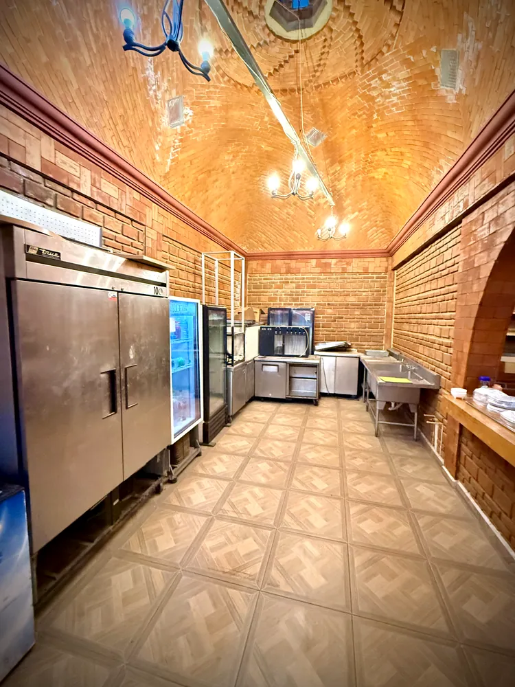
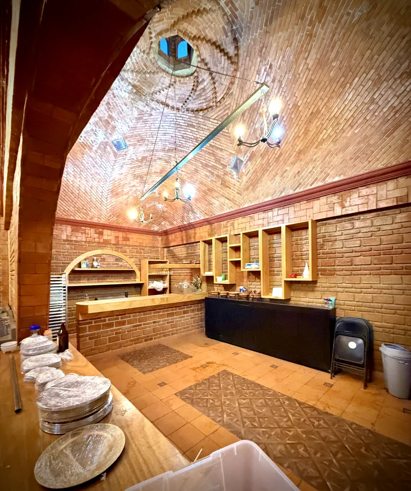
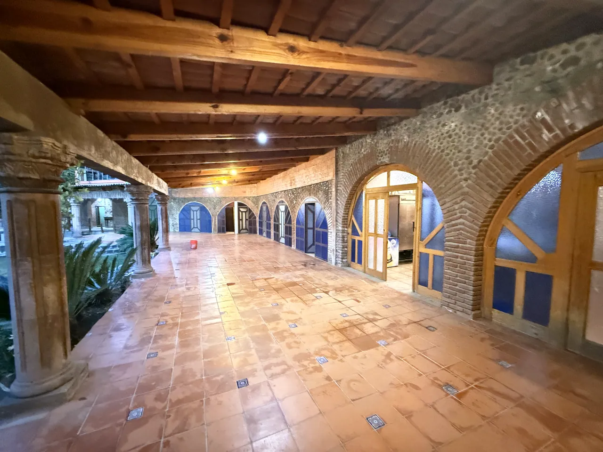

Preparación y servicio
Cocina de apoyo
Un espacio amplio junto al salón, útil para coordinar el servicio de alimentos durante tu evento.
Parte de nuestras instalaciones
Tu banquete, con mejor logística.
La finca cuenta con una cocina contigua al salón. Puede facilitar el trabajo de proveedores de banquete y servicio, conforme a las condiciones del evento.
El inventario de electrodomésticos, refrigeración, mobiliario, conexiones y utensilios se está verificando. Ningún equipo se garantiza sin confirmación previa.
Pregunta por el servicio ↗
